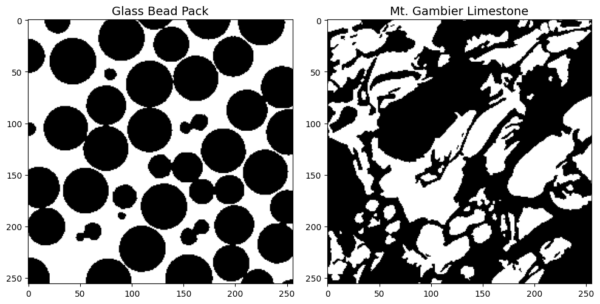
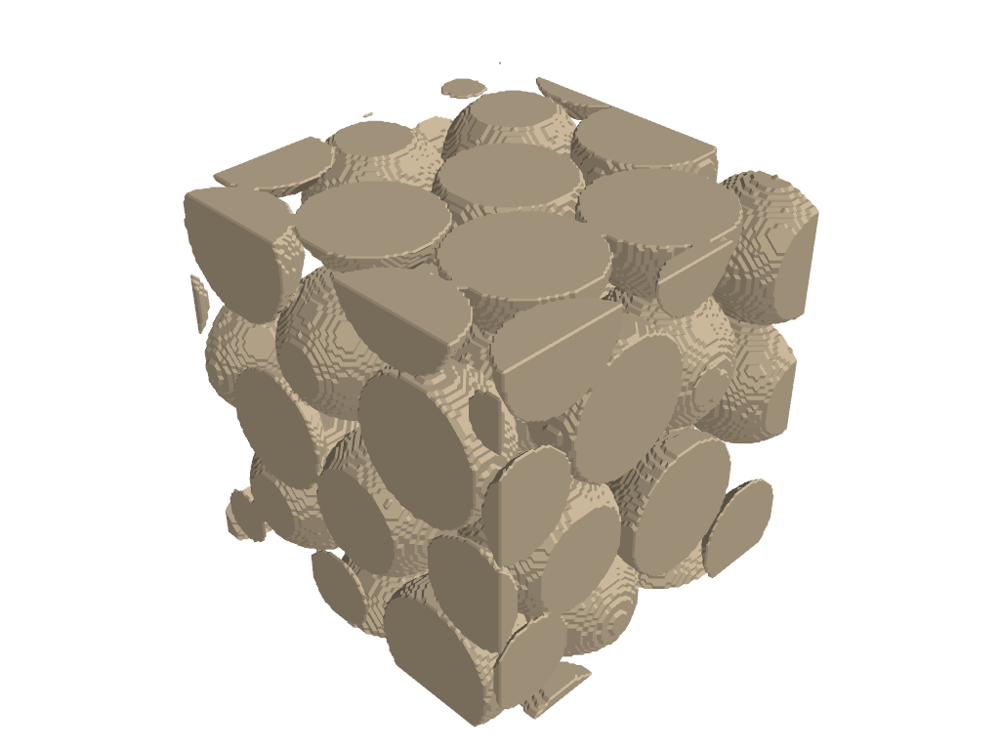
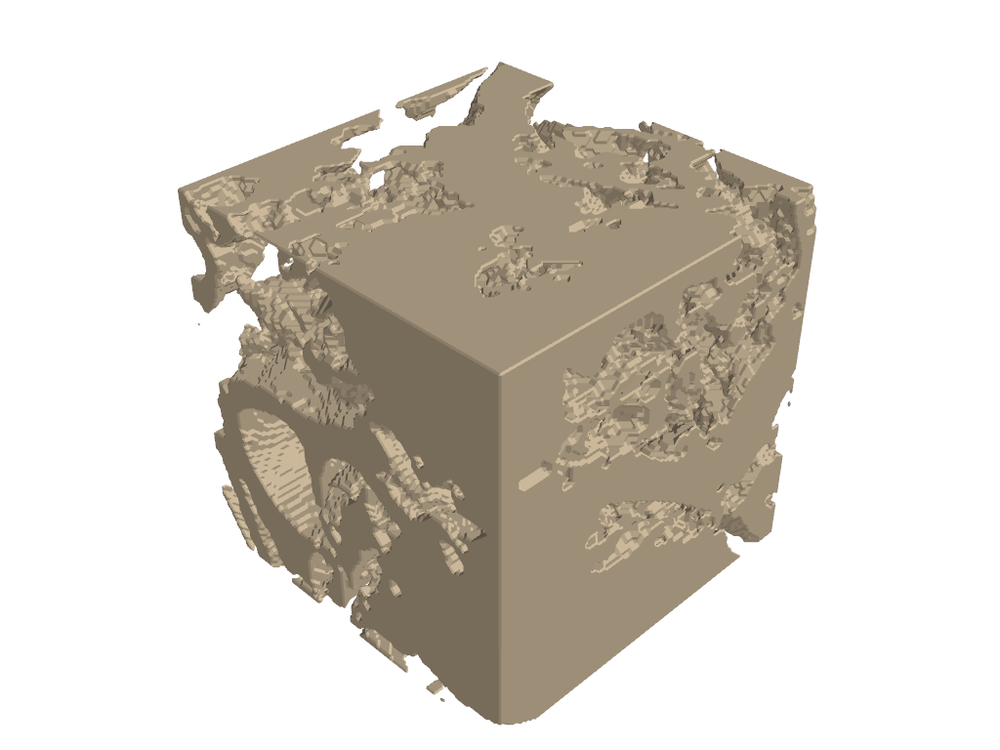
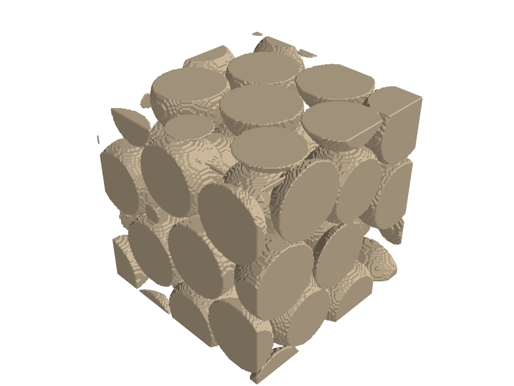
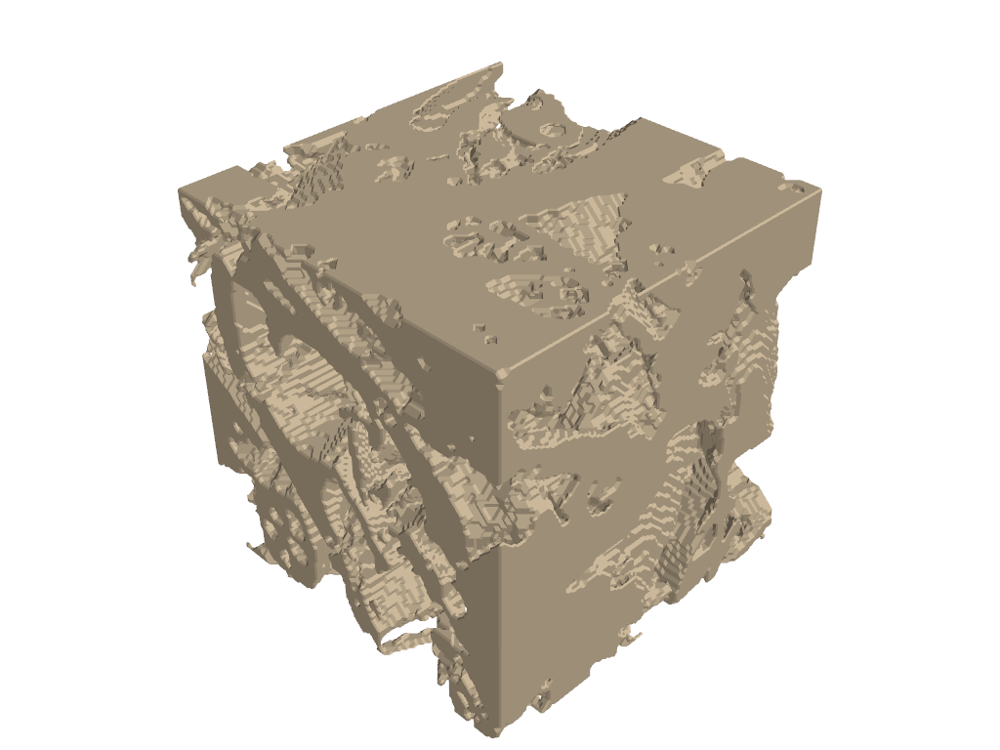
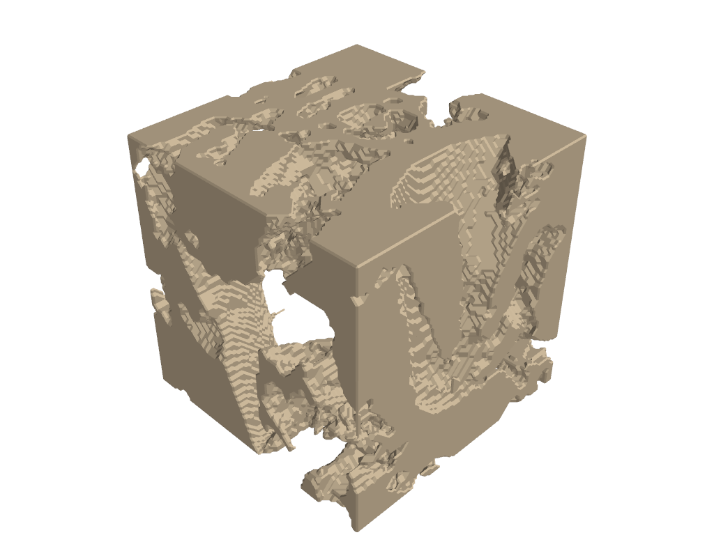
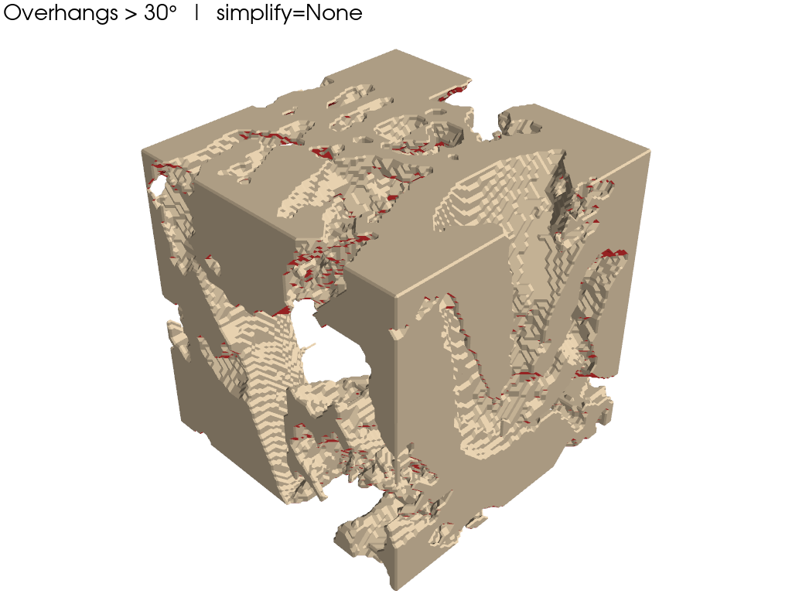

Finding Competent Subsets for Visualization and Simulation#
This notebook demonstrates the workflow for finding a competent subset for visualization.
Import packages#
import dpm_tools as dpm
import numpy as np
import matplotlib.pyplot as plt
from pathlib import Path
import pyvista as pv
import skimage
import cc3d
pv.set_jupyter_backend('static')
Demonstration Image#
We demonstrate the workflow using a beadpack and a Mt. Gambier limestone example.
image_path = Path('../../docs/_static')
beadpack, gambier = [dpm.io.read_image(image_path / (tif_img + '.tif')) for tif_img in ['beadpack', 'mtgambier']]
fig, ax = plt.subplots(nrows=1, ncols=2,figsize=(10,5))
ax = ax.flatten()
im = ax[0].imshow(beadpack[0,:,:], cmap='gray', interpolation=None)
ax[0].set_title('Glass Bead Pack', fontsize=14)
im2 = ax[1].imshow(gambier[0,:,:], cmap='gray', interpolation=None)
ax[1].set_title('Mt. Gambier Limestone', fontsize=14)
plt.tight_layout()
plt.show()

def plot_sample(sample, subset=True, subset_range=None):
plotter_obj = pv.Plotter(lighting='three lights')
# Set background colors
plotter_obj.set_background(color='w')
# Set font colors and sizes
pv.global_theme.font.color = 'black'
pv.global_theme.font.size = 18
pv.global_theme.font.label_size = 14
pv.set_jupyter_backend('static')
if subset and subset_range:
if isinstance(subset_range[0], tuple): # Case for tuple of tuples
x_min, x_max = subset_range[0]
y_min, y_max = subset_range[1]
z_min, z_max = subset_range[2]
sample = sample[x_min:x_max, y_min:y_max, z_min:z_max]
else: # Case for single tuple
mini, maxi = subset_range
sample = sample[mini:maxi, mini:maxi, mini:maxi]
sample = np.pad(sample, ((1, 1), (1, 1), (1, 1)), mode='constant', constant_values=1)
sample = dpm.io.Image(scalar=sample)
plotter_obj = dpm.visualization.plot_isosurface(sample, plotter_obj, show_isosurface=[0.5],
mesh_kwargs={"opacity":1,
"color":(200 / 255, 181 / 255, 152 / 255),
"diffuse": 0.75,
"ambient": 0.15})
plotter_obj.show()
Initial Visualization#
One obvious option is to arbitrarily select a subset from somewhere in the image.
subset_range = (128, 256)
plot_sample(beadpack, subset=True, subset_range=subset_range)
plot_sample(gambier, subset=True, subset_range=subset_range)


# Porosity of the selected subset of Gambier Limestone
gambier_128 = gambier[128:256, 128:256, 128:256]
porosity = np.sum(gambier_128 == 1)/(128**3)*100
print(round(porosity, 1), '%')
45.2 %
Extract Competent Subset#
The dpm_tools.visualization.extract_competent_subset() function identifies the best cubic subset for visualizing a segmented dataset, with optional 3D printing optimization.
Parameters:
data: A 3D numpy array, or an instance of Vector or Image class from DPM Tools.
cube_size: The size of the visualization cube. Default is 100 (100x100x100).
batch: The batch size over which to calculate the statistics. Default is 100.
pore_class: The class representing pores in the original data, used for porosity matching. Default is 0.
class_to_optimize: The class to optimize connectivity for (0 or 1). Default is 0.
for_3d_printing: If True, evaluates printability metrics including overhang analysis. Default is False.
max_overhang_angle: Maximum overhang angle (in degrees) for 3D printing evaluation. Default is 20.
exhaustive_search: If True, searches the entire 3D volume independently. If False, searches diagonally (faster). Default is False.
debug: If True, prints detailed debugging information including failure statistics. Default is False.
show_progress: If True, displays a tqdm progress bar. Default is True.
Description:
The function processes the input data to find a cubic subset that maximizes connectivity of the target class while maintaining representative porosity. It performs the following steps:
Data Preparation:
Converts the target class (class_to_optimize) to binary format for connectivity analysis.
Stores the original data for porosity calculations.
Porosity Calculation:
Computes the overall porosity based on the pore_class in the original dataset.
Search Configuration:
Sets up the search mode: diagonal (faster, searches along main diagonal) or exhaustive (searches entire 3D volume).
Defines the outer cube size and inner cube boundaries (75% of cube_size, using 25% margin from each edge).
Initializes statistics arrays based on search mode and 3D printing flag.
Intelligent Subset Search:
Randomly samples cubic subsets with progress tracking.
For each candidate subset:
Verifies the target class exists in the inner region.
Performs connected component analysis to find the largest connected component.
Validates that the largest component reaches the inner cube (ensuring connectivity throughout).
Checks that subset porosity is within ±20% of the overall dataset porosity.
If 3D printing mode is enabled:
Generates a 3D mesh using marching cubes algorithm.
Computes surface normals and analyzes overhang angles.
Calculates printability score based on connectivity and overhang penalty.
Rejects subsets with >30% overhang surface area.
Tracks failure modes (no inner material, no components, no center connectivity, porosity mismatch) for debugging.
Best Subset Identification:
Selects the best subset based on:
Standard mode: Harmonic mean of outer and inner connected component sizes.
3D printing mode: Combined score of connectivity and printability (minimizing overhangs).
Prints porosity statistics, optimized class, and the competent subset range.
Returns:
best_subset_range:
Diagonal mode: A tuple
(min, max)representing the range for all three dimensions.Exhaustive mode: A tuple of three tuples
((x_min, x_max), (y_min, y_max), (z_min, z_max))for independent dimensional ranges.
stats_array: A numpy array containing statistics of all valid subsets found during the search (outer counts, inner counts, porosity, positions, and optional printing metrics).
Usage Examples:
# Standard diagonal search optimizing pore connectivity
subset, stats = extract_competent_subset(data, cube_size=100, batch=100,
pore_class=0, class_to_optimize=0)
sample_subset = data[subset[0]:subset[1], subset[0]:subset[1], subset[0]:subset[1]]
# Exhaustive 3D search for solid phase connectivity
subset, stats = extract_competent_subset(data, cube_size=100, batch=200,
pore_class=0, class_to_optimize=1,
exhaustive_search=True)
sample_subset = data[subset[0][0]:subset[0][1],
subset[1][0]:subset[1][1],
subset[2][0]:subset[2][1]]
# 3D printing optimization with overhang constraints
subset, stats = extract_competent_subset(data, cube_size=50, batch=500,
pore_class=1, class_to_optimize=0,
for_3d_printing=True,
max_overhang_angle=20)
beadpack_subset, _ = dpm.visualization.extract_competent_subset(beadpack, cube_size=128, batch=100, pore_class = 1, class_to_optimize = 1)
Original Porosity (class 1): 37.89 %
Subset Porosity: 38.41 %
Optimized for class 1 connectivity
Competent Subset: [117:245,117:245, 117:245]
gambier_subset, _ = dpm.visualization.extract_competent_subset(gambier, cube_size=128, batch=100, pore_class = 1, class_to_optimize = 1, debug=True, exhaustive_search=True)
Input data shape: (256, 256, 256), unique values: [0 1]
pore_class=1, class_to_optimize=1
After conversion, class 1 is now 1
Fraction of 1s: 0.436
Pore fraction (class 1): 0.436
Outer cube: 128^3, Inner cube: 64^3
Search mode: Exhaustive 3D
Starting search for 100 valid cubes...
Found 1/100 - outer: 1046239, inner: 168636, porosity: 0.502
Found 2/100 - outer: 1033010, inner: 190994, porosity: 0.499
Found 3/100 - outer: 1064633, inner: 140684, porosity: 0.514
Found 4/100 - outer: 1041584, inner: 158571, porosity: 0.503
Found 5/100 - outer: 951594, inner: 109123, porosity: 0.456
Found 10/100 - outer: 1052974, inner: 144325, porosity: 0.509
Found 20/100 - outer: 988578, inner: 147608, porosity: 0.499
Found 30/100 - outer: 975290, inner: 155178, porosity: 0.481
Found 40/100 - outer: 1037041, inner: 173283, porosity: 0.499
Found 50/100 - outer: 934409, inner: 141773, porosity: 0.454
Found 60/100 - outer: 954605, inner: 94420, porosity: 0.457
Found 70/100 - outer: 1020466, inner: 153046, porosity: 0.498
Found 80/100 - outer: 982427, inner: 117430, porosity: 0.474
Found 90/100 - outer: 1079272, inner: 167702, porosity: 0.518
Found 100/100 - outer: 1060373, inner: 135868, porosity: 0.507
Search complete after 120 attempts
Final failures: no_inner=0, no_comp=0, no_center=0, porosity=20
Original Porosity (class 1): 43.6 %
Subset Porosity: 49.86 %
Optimized for class 1 connectivity
Competent Subset: [88:216,112:240, 98:226]
Final Visualizations#
plot_sample(beadpack, subset=True, subset_range=beadpack_subset)
plot_sample(gambier, subset=True, subset_range=gambier_subset)


3D Printing Case#
subset,_ = dpm.visualization.extract_competent_subset(gambier, cube_size=100, batch=50,
pore_class=0, class_to_optimize=1,
for_3d_printing=True,exhaustive_search=True,
max_overhang_angle = 30)
x_range, y_range, z_range = subset
gambier_subset = gambier[x_range[0]:x_range[1],
y_range[0]:y_range[1],
z_range[0]:z_range[1]]
Overhang surface area: 29.54%
Original Porosity (class 0): 56.4 %
Subset Porosity: 45.12 %
Optimized for class 1 connectivity
Competent Subset: [53:153,40:140, 68:168]
denoised = cc3d.dust(
gambier_subset, threshold=5000,
connectivity=26, in_place=False
)
plot_sample(denoised)

Visualizing the Overhangs#
We include a helper function here for this.
def visualize_overhangs(
sample_subset,
max_overhang_angle=30,
simplify=None, # e.g. 0.7 removes ~70% of faces
subset=True,
subset_range=(0, 128),
):
"""
Detect and visualize overhangs in a 3D binary voxel array.
Parameters
----------
sample_subset : np.ndarray
3D binary array (1 = solid, 0 = void)
max_overhang_angle : float
Max printable overhang angle (degrees from vertical)
simplify : float or None
Fraction of faces to remove (PyVista decimation).
Example: 0.7 removes ~70% of faces.
subset : bool
Whether to crop the volume
subset_range : tuple
Cropping range. Can be:
- Diagonal mode: (min, max) - same range for all dimensions
- Exhaustive mode: ((x_min, x_max), (y_min, y_max), (z_min, z_max))
"""
# -----------------------------
# Crop volume
# -----------------------------
if subset:
# Check if diagonal mode (simple tuple) or exhaustive mode (nested tuples)
if isinstance(subset_range[0], tuple):
# Exhaustive mode: ((x_min, x_max), (y_min, y_max), (z_min, z_max))
x_range, y_range, z_range = subset_range
volume = sample_subset[x_range[0]:x_range[1],
y_range[0]:y_range[1],
z_range[0]:z_range[1]]
else:
# Diagonal mode: (min, max)
mini, maxi = subset_range
volume = sample_subset[mini:maxi, mini:maxi, mini:maxi]
else:
volume = sample_subset.copy()
volume = volume.astype(float)
# volume = 1 - volume.astype(float)
volume = np.pad(volume, ((1, 1), (1, 1), (1, 1)), mode='constant', constant_values=1)
# -----------------------------
# Marching cubes (voxel-true surface)
# -----------------------------
verts, faces, _, _ = skimage.measure.marching_cubes(
volume,
level=0.5
)
# Convert faces to PyVista format
faces_pv = np.hstack(
[np.full((faces.shape[0], 1), 3), faces]
)
pv_mesh = pv.PolyData(verts, faces_pv)
# -----------------------------
# Simplify mesh (OPTIONAL)
# -----------------------------
if simplify is not None:
if not (0.0 < simplify < 1.0):
raise ValueError("simplify must be between 0 and 1")
pv_mesh = pv_mesh.decimate_pro(simplify, preserve_topology=True)
# -----------------------------
# Recompute normals AFTER simplification
# -----------------------------
pv_mesh.compute_normals(
cell_normals=True,
point_normals=False,
inplace=True
)
face_normals = pv_mesh.cell_normals
# -----------------------------
# Overhang detection
# -----------------------------
build_dir = np.array([0.0, 0.0, 1.0])
cos_theta = face_normals @ build_dir
angles = np.degrees(
np.arccos(np.clip(cos_theta, -1.0, 1.0))
)
overhang_faces = angles > (90.0 + max_overhang_angle)
face_areas = pv_mesh.compute_cell_sizes(
length=False, area=True, volume=False
)["Area"]
percent_overhang_area = (
100.0 * face_areas[overhang_faces].sum() / face_areas.sum()
)
print(f"Overhang surface area: {percent_overhang_area:.2f}%")
# -----------------------------
# Face coloring
# -----------------------------
face_colors = np.zeros((pv_mesh.n_faces, 4), dtype=np.uint8)
face_colors[:] = [200, 181, 152, 255] # normal surface
face_colors[overhang_faces] = [220, 50, 50, 255] # overhangs
pv_mesh.cell_data["Colors"] = face_colors
# -----------------------------
# Visualization
# -----------------------------
plotter = pv.Plotter(lighting="three lights")
plotter.set_background("white")
pv.global_theme.font.color = "black"
pv.global_theme.font.size = 18
pv.global_theme.font.label_size = 14
plotter.add_mesh(
pv_mesh,
scalars="Colors",
rgb=True,
opacity=1.0,
show_edges=False
)
plotter.add_text(
f"Overhangs > {max_overhang_angle}° | simplify={simplify}",
font_size=14
)
plotter.show()
visualize_overhangs(
denoised,
simplify=None,
max_overhang_angle=30,
subset=False
)
Overhang surface area: 28.96%
